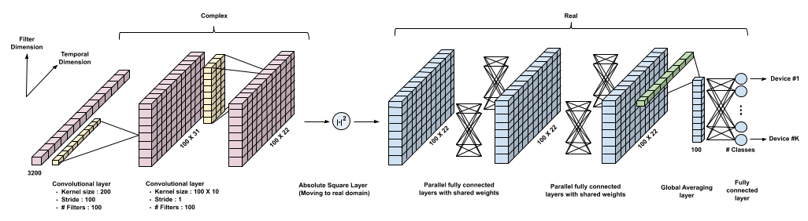

Radyo Frekansı Makine Öğrenmesi
 Communication system
Communication system
- Our goal is to learn RF signatures that can distinguish between devices sending exactly the same message. This is possible due to subtle hardware imperfections (labeled "nonlinearities" in the figure below) unique to each device.
- Since the information in RF data resides in complex baseband, we employ CNNs with complex-valued weights to learn these signatures. This technique does not use signal domain knowledge and can be used for any wireless protocol. We demonstrate its effectiveness for two protocols - WiFi and ADS-B.

- We show that this approach is vulnerable to spoofing when using the entire packet: the CNN focuses on fields containing ID info (eg. MAC ID in WiFi) which can be easily spoofed. When using the preamble alone, reasonably high accuracies are obtained, and performance is significantly enhanced by noise augmentation.
- We also study robustness to confounding factors in data collected over multiple days and locations, such as the carrier frequency offset (CFO), which drifts over time, and the wireless channel, which depends on the propagation environment. We show that carefully designed data augmentation is critical for learning robust wireless signatures.
Yayınlar
Metehan Çekiç
Doktora Öğrencisi WCSL Lab
Lisans eğitimimi Boğaziçi Üniversitesi Elektrik-Elektronik Mühendisliği ve Fizik Bölümlerinde, yüksek lisansını Kaliforniya Üniversitesi Santa Barbara Elektrik ve Bilgisayar Mühendisliği bölümünde sırasıyla 2017 ve 2019 yıllarında tamamladım. Şu anda WCSL laboratuvarında Profesör Madhow’un danışmanlığında doktorama devam etmekteyim.